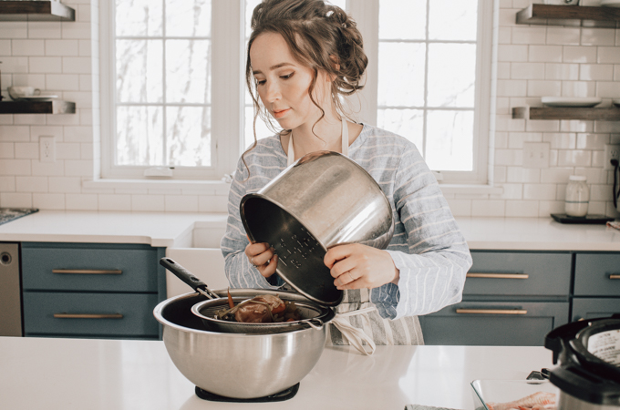
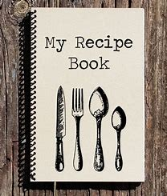

Description:
This hearty Italian pasta dish features rich tomato sauce, ground meat, and aromatic herbs. Serve it over al dente
spaghetti for a comforting meal.

Ingredients:
- 1 lb (450 g) ground beef or pork
- 1 onion, finely chopped
- 2 cloves garlic, minced
- 1 carrot, grated
- 1 celery stalk, finely chopped
- 1 can (28 oz) crushed tomatoes
- 2 tablespoons tomato paste
- 1 teaspoon dried oregano
- 1 teaspoon dried basil
- Salt and pepper, to taste
- 12 oz (340 g) spaghetti
- Grated Parmesan cheese for serving

Instructions:
- In a large skillet, brown the ground meat over medium heat. Drain excess fat.
- Add the chopped onion, minced garlic, grated carrot, and chopped celery. Sauté until vegetables are softened.
- Stir in the crushed tomatoes, tomato paste, oregano, basil, salt, and pepper.
- Simmer the sauce for 20-30 minutes, allowing the flavors to meld.
- Meanwhile, cook the spaghetti according to package instructions. Drain.
- Serve the Bolognese sauce over the cooked spaghetti. Top with grated Parmesan cheese.